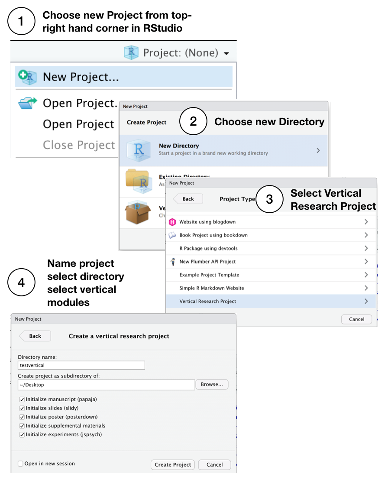
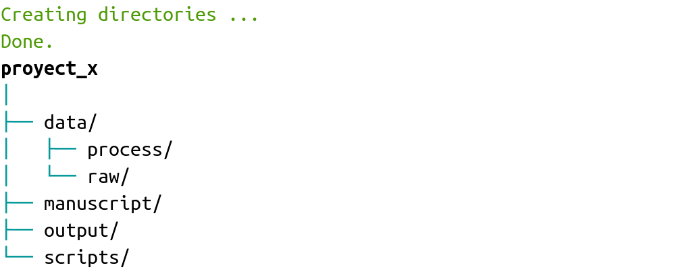
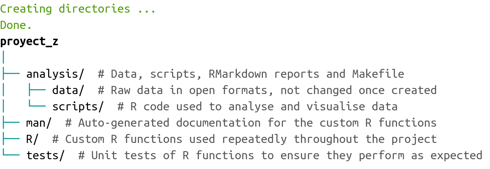

Compendios de investigación (en R)
Herramientas prácticas para investigación
reproducible
Marcelo
Araya-Salas, PhD
“2022-10-23”
A medida que los análisis de datos científicos aumentan en complejidad, también aumentan los desafíos para asegurarse que estos análisis sean reproducible. Varias propuestas han surgido para intentar solucionar los problemas de reproducibilidad en el análisis computacional de datos.
Lastimosamente esto se complica aún mas con la falta de instrucción formal en el manejo y estructuración de datos para análisis que sufren (sufrimos) los científicos. Esto hace casi inevitable la poca consistencia y hasta el caos en nuestra organización de datos para proyectos de investigación. Este es un ejemplo de un proyecto “poco estructurado” (por usar un eufemismo):

Esta (falta de) “estructura” no es práctica. Lastimosamente, es probable que no sea un caso aislado.
En este tutorial hablaremos sobre algunas de las herramientas que se han desarrollado para solventar estos problemas que se han desarrollado en R.
Formatos para la estructura de carpetas
Aquí encontrarán una lista corta y para nada exhaustiva de ejemplos de estructura de carpetas para proyectos de análisis de datos.
Formato “Noble”
Noble (2009) propone una estructura de datos especifica para datos bioinformáticos (aunque podría ser adaptada a otras necesidades):

Esta estructura, sin embargo, utiliza carpetas con fechas para llevar el orden cronológico del análisis, algo que debería ser documentado con un sistema de control de versiones (i.e. Git). Por lo que resulta poco funcional.
Formato R-dir
En este blog se propone el siguiente formato:
analysis_r-dir/
|
├── code/
│ ├── processed
│ └── raw
├── data/
│ ├── raw/
│ └── clean/
├── figures/
│ ├── exploratory
│ └── final
└── text/
├── final
└── notes
Las principales carpetas incluyen:
code: contiene todos los scripts de R (u otros lenguajes); los crudos (?) van en “./code/raw” y los procesados en “./processed/clean”
data: cualquier tipo de datos, los crudos van en “./data/raw” y los procesados en “./data/clean”
figures: las figuras exploratorias van en “./figures/exploratory” y las definitivas en “./figures/final”
Este formato puede ser copiado (o clonado) de su repositorio de github.
Las estructura propuesta es similar a otras que encontramos en la web. Las variaciones dependen un poco del tipo de datos y el formato de los resultado obtenidos (i.e. imágenes vs arboles filogéneticos).
Formato “Moldach”
Este formato es muy similar al anterior, y se incluye principalmente para resaltar los factores comunes entre los diferentes formatos propuestos:
nombre_del_proyecto
|--data
|--raw
|--file_001.xlsx
|--file_002.gen
|--file_002.sample
|--tidy
|--file_001-cleaned.csv
|--refs
|--Oldach_2018.pdf
|--analysis
|--01-analysis.Rmd
|--figures
|--01-scatterplot.jpg
|--01-correlation.png
|--R
|--exploratory_analysis.R
|--pdf_scraper.R
|--name_of_project.Rproj
|--run_all.R
Las principales diferencias con el formato “r-dir” son el uso de una carpeta de referencias y el código para compilar el compendio en el directorio raíz.
El formato se describe en detalle en este blog y puede ser clonado de su repositorio de github.
Paquetes de R como plantilla para compendios
Algunas de estas herramientas disponibles en paquetes de R utilizan
la estructura de carpetas e integración continua propia de estos
paquetes (Marwick et al. 2018; Vourre & Crump 2020). Uno de estos es
el paquete vertical (Vourre & Crump 2020). Sus autores
proponen varias ventajas de utilizar este formato para compartir una
productos de investigación (desde guiones de experimentos hasta
artículos, presentaciones y carteles):
Los paquetes de R tienen una estructura de archivos estandarizada y bien organizada que es útil para fines organizativos
Los investigadores a menudo desarrollan funciones personalizadas para el análisis, y ponerlas en un paquete de R facilita compartir las funciones
Los paquetes R pueden incluir datos de un proyecto de investigación y proveen una forma natural de documentar los datos utilizando los mismos esquemas para documentar funciones de R
Los paquetes de R incluyen varios documentos a través de la carpeta de viñetas, que en principio podrían incluir varios formatos para comunicar la investigación, como un manuscrito o un conjunto de diapositivas escrito en R Markdown
Los paquetes R se pueden convertir automáticamente en sitios web a través de
pkgdown, lo que proporciona un formato atractivo para compartir materiales relacionados a la investigación
Sin embargo el uso de este formato puede generar mas problemas de los que ayuda a resolver. Aquí enumero algunas de las incongruencias:
Las funciones deberían usarse una vez o en un solo punto en el flujo de análisis, entonces, ¿para que compilarlas y documentarlas con tanto detalle?
Documentar paquetes y las funciones dentro de estos es complejo
DESCRIPTION duplica esfuerzo e información de README y demanda un mayor conocimiento de formato y convenciones específicas de paquetes de R
Hacer datos disponibles al cargar el ambiente no provee ventajas y hace los datos menos accesibles fuera de R (i.e. no se gana nada usando
data("base_de_datos")en vez deread.csv("base_de_datos.csv"))Los paquetes son para compartir herramientas que se usen repetidas veces. La reproducción de un análisis de datos se da una o pocas veces
Los paquetes de R tienen carpetas que no tienen funcionalidad en análisis de datos (“man”, “vignettes”, “inst”)
El integrar los componentes de un paquete (necesario para poder usar integración continua) requiere de otros archivos con estructuras y convenciones complejas que implican una curva de aprendizaje innecesariamente empinada
Para una discusión mas detallada de los problemas asociados con el uso de paquetes como plantillas les recomendamos leer este post (McBrain 2020).
Paquetes de R para generación de compendios
vertical
El paquete vertical provee un flujo de trabajo
estructurado basado en la estructura de carpetas e integración continua
de los paquetes de R para crear y compartir materiales y recursos de
investigación como un paquete de R (Matthew et al. 2020). El paquete se
puede instalar y/o cargar desde github así (aún no está en CRAN(?)):
También necesitarán otros paquetes si desean hacer uso de funcionalidades como escribir artículos y generar presentaciones:
# instalar papaja
devtools::install_github("crsh/papaja")
install.packages("tinytex")
tinytex::tlmgr_update()
# si no puede generar los articulos trate esto como ultima
# opcion update.packages(ask = FALSE, checkBuilt = TRUE)
flujo de trabajo de ‘vertical’
La instalación del paquete vertical agrega una nueva
plantilla de proyecto a RStudio (RStudio debe reiniciarse después de
instalarvertical para que reconozca la plantilla). Los
usuarios pueden iniciar un nuevo proyecto “vertical” desde RStudio
eligiendo la opción al crear un nuevo proyecto. Por defecto, un proyecto
“vertical” se estructura de la siguiente manera:

El nuevo proyecto contiene un esqueleto más complejo que el de un paquete de R:
- Carpetas para datos sin procesar, datos y viñetas
- Un archivo
_pkgdown.ymlpara controlar los parámetros del sitio web cuando se procesa conpkgdown - Carpetas adicionales para los productos del proyecto de investigación como “experimentos”, “manuscrito”, “modelo”, “carteles” y “diapositivas”.
De forma predeterminada, vertical incluye plantillas de
R Markdown de otros paquetes dentro de cada carpeta para crear cada tipo
de contenido. Como resultado, vertical sugiere usar R como
una fuente de soluciones de plataforma única para la creación de
productos de investigación.
Crear un proyecto ‘vertical’
Luego de instalar vertical reinicie RStudio, luego siga
estos pasos para iniciar un nuevo proyecto vertical. Cuando
elija un nombre, debe ser un nombre de un
paquete de R válido. Por ejemplo, el nombre debe contener letras,
números o puntos (por ejemplo, mi.nombre), pero sin puntos al final.
Esto significa que no hay espacios, guiones ni guiones bajos.

También puede crear un proyecto ‘vertical’ desde la consola, consulte
la documentación de vertical_project() para más opciones.
Esto carga la ventana de plantillas de proyectos de R desde la
consola:
Esta es la estructura de carpetas que genera:
compendio_vertical/
|
├── data_raw/
├── manuscripts/
│ ├── manuscript.Rmd
│ └── r-references.bib
├── posters/
├── R/
├── slides/
└── vignettes/
Ejercicio 1
1.1 Cree compendio usando vertical
1.2 Modifique el archivo R markdown en ‘./manuscripts/’ y genere nuevamente el HTML
rrtools
El objetivo de rrtools es “proporcionar instrucciones,
plantillas y funciones para crear un compendio básico adecuado para
escribir un artículos o informes reproducibles en R” (Marwick 2019).
Este paquete documenta los pasos clave y proporciona funciones útiles
para crear rápidamente un nuevo compendio de investigación.
rrtools brinda una plantilla para la escritura académica
utilizando R Markdown y bookdown. También permite el
aislamiento de su entorno computacional mediante Docker, el
control de versiones de paquetes mediante MRAN y la
integración continua mediante Travis:
Podemos iniciar un compendio con rrtools así (no lo
corran si están dentro de un proyecto de Rstudio):
Deben actualizar el archivo DESCRIPTION (ubicado en el directorio del compendio) para incluir metadatos precisos. Por ejemplo, la sección ‘imports’debe tener los nombres de los paquetes utilizados en los códigos en nuestro compendio (i.e. ’Imports: warbleR, baRulho, NatureSounds’).
Podemos agregar una licencia al compendio de esta forma:
Esto añade la licencia a DESCRIPTION y genera un archivo LICENCE con los detalles de la licencia. Por defecto utiliza la licencia de MIT aunque otras licencias pueden ser definidas.
A diferencia de vertical, rrtools no genera
todas las carpetas básicas necesarias para un compendio. Podemos crear
estas carpetas de esta forma:
Esto genera la carpeta “./analysis” con la siguiente estructura:
analysis/
|
├── paper/
│ ├── paper.Rmd # documento para generar el articulo
│ └── references.bib # referencias en formato bibtex
├── figures/ # figuras producidas por el rmarkdown
|
├── data/
│ ├── raw_data/ # datos crudos (originales)
│ └── derived_data/ # datos procesados
|
└── templates
├── journal-of-archaeological-science.csl # estilo de citas
|
├── template.docx # plantilla de articulo generado
└── template.Rmd # plantilla para rmd de articulo
EL archivo README.Rmd se puede crear asi:
EL README generado incluye una plantilla que muestra cómo citar su proyecto (debe ser editado para incluir el título y el DOI correctos). También contiene información de la licencia, las figuras, el código y los datos de su compendio.
Esta función también agrega otros dos archivos Rmd: un código de conducta para los usuarios (CONDUCT.md) y otro con instrucciones básicas para las personas que desean contribuir a su proyecto (CONTRIBUTING.md).
Además ofrece funciones como rrtools::use_dockerfile() y
rrtools::use_travis() para facilitar la integración
continua. Visite el
repositorio de github del paquete para mas detalle.
workflowr
El paquete workflowr intenta ayudar a los investigadores
a “organizar sus análisis de una manera que promueve la gestión eficaz
del proyecto, la reproducibilidad, la colaboración y el intercambio de
resultados” (Blischak et al. 2019). workflowr combina
programación literaria (knitr y rmarkdown) y
control de versiones (Git, a través de git2r) para generar
un sitio web que contiene resultados documentados, y ‘versionados’.
A diferencia de rrtools y vertical,
workflowr no emula la estructura de carpetas de los
paquetes de R, lo cual simplifica su uso y hace mas intuitiva su
estructura desde el punto de vista del investigador.
Estas son algunas de las características del paquete que se detallan en su sitio de github:
- Organizado
- Proporciona una plantilla de proyecto con subdirectorios organizados
- Mezcla código y resultados con R Markdown
- Utiliza Git para versionar tanto el código fuente como los resultados
- Reproducible
- Muestra la versión del código utilizada para crear cada resultado
- Ejecuta cada análisis en una sesión de R aislada
- Registra la información de la sesión de cada análisis
- Establece la misma semilla (“seed”) para la generación de números aleatorios para cada análisis
- Compartible
- Crea un sitio web para presentar los resultados de su investigación
- Documenta cómo alojar su sitio web de forma gratuita a través de GitHub Pages o GitLab Pages
- Crea vínculos a versiones anteriores de resultados
El paquete lo podemos instalar así:
Para crear un proyecto con workflowr primero debemos
configurar git con la función wflow_git_config() y luego lo
iniciamos con wflow_start():
# Configurar Git
wflow_git_config(user.name = "nombre completo", user.email = "correo@dominio")
# Empezar un proyecto
wflow_start("mi_compendio")
Esta es la estructura de las carpetas en el compendio de ‘workflowr’:
mi_compendio/
├── .gitignore
├── .Rprofile
├── _workflowr.yml
├── analysis/
│ ├── about.Rmd
│ ├── index.Rmd
│ ├── license.Rmd
│ └── _site.yml
├── code/
│ ├── README.md
├── data/
│ └── README.md
├── docs/
├── myproject.Rproj
├── output/
│ └── README.md
└── README.md
Y con este código podemos compilar el sitio del compendio:
Este comando ‘teje’ todos los archivos de R Markdown en la carpeta ‘./analysis’ y guarda los archivos HTML correspondientes en ‘./docs’. Cada archivo se crea en su propia sesión R externa para evitar posibles conflictos entre análisis (este es el comportamiento por defecto de archivos Rmd). Ademas abre la copia local del sitio del compendio en el navegador de internet. También podemos darle un vistazo a la copia local del sitio así:
workflowr distingue entre los archivos R Markdown que se
publican y los que no se publican. Un archivo publicado se incluye en el
sitio web en línea; mientras que el archivo HTML de un archivo R
Markdown no publicado solo se puede ver en la computadora local. Dado
que el proyecto recién se inició, no hay archivos publicados. Para ver
el estado del proyecto de workflowr, debemos usar
wflow_status():
Si queremos hacer los HTMLs públicos, debemos usar la función
wflow_publish() y proveer los nombres de los R markdowns
que los generan con el argumento files. Además debemos agregar un
mensaje para el ‘commit’ que acompaña los cambios generados cuando se
sincroniza con la copia remota:
# publicar rmds
wflow_publish(files = c("analysis/index.Rmd", "analysis/about.Rmd",
"analysis/license.Rmd"), message = "mi primer commit del compendio")
En este punto hemos creado un sitio web con control de versiones que
existe localmente. El siguiente paso es ponerlo en un repositorio en
linea (i.e. GitHub o GitLab). Para subir y/o sincronizar el compendio
(incluyendo el sitio web) a github usamos la función
wflow_use_github(). El único argumento que requiere es el
nombre de usuario:
El tutorial “getting
started” de workflowr provee mas detalles de cada uno
de los pasos para generar compendios con este paquete. La documentación
es bastante completa, incluyendo varios otros tutoriales para
personalizar los compendios y sus sitios web. [Aquí podemos encontrar la
lista de tutoriales](https://jdblischak.github.io/workflowr/articles/index.html.
Ejercicio 2
2.1 Cree un compendio usando workflowr
2.2 Cree el sitio del compendio
sketchy
Este es un paquete que estamos desarollando recientemente. Por el momento solo permite crear la estructura de carpetas y generar un Rmarkdown para escribir el artículo. Tambien permite visualizar la estructura del compendio en la consola. La principal diferencia con los otros paquetes es que no se casa con una sola estructura; provee varias estructuras alternativas y también permite al usuario generar sus propios formatos.
Para usarlo debemos primero instalarlo desde github así:
El paquete viene con 13 estructuras de carpetas.Se pueden usar con la
función compendium_skeleton(). La función crea las
carpetas/subcarpetas e imprime un diagrama del compendio en la
consola:
Compendio básico
path = tempdir()
make_compendium(name = "proyect_x", path = path, format = compendiums$basic$skeleton)
(en el ejemplo se usa un directorio temporal pero este debe ser cambiado al directorio donde se quiere crear el compendio)
Formatos alternativos
Podemos usar formatos de otras fuentes. En este caso usamos el de Wilson et al. (2017):

También podemos añadir comentarios para explicar los contenidos de cada carpeta:
make_compendium(name = "proyect_z", path = path, format = compendiums$large_compendium$skeleton,
comments = compendiums$large_compendium$comments)
Cuando se crea un compendio que incluye una carpeta llamada “manuscript” el paquete añade automáticamente el archivo “manuscript_template.Rmd” que puede ser usado para escribir el artículo del proyecto.
La idea es incluir funciones para identificar archivos grandes que no pueden ser subidos a github y poder subirlos a otros repositorios (i.e. figshare o zenodo).
Ejercicio 3
3.1 Cree un compendio con una estructura personalizada usando
sketchy
3.2 Añada comentarios a cada carpeta
Referencias
- Araya-Salas, M., Willink, B., Arriaga, A. (2020), sketchy: research compendiums for data analysis in R. R package version 1.0.0.
- Aust, F. & Barth, M. (2020). papaja: Prepare reproducible APA journal articles with R Markdown. R package version 0.1.0.9997. https://github.com/crsh/papaja
- Blischak JD, Carbonetto P and Stephens M. Creating and sharing reproducible research code the workflowr way [version 1; peer review: 3 approved]. F1000Research 2019, 8:1749. (https://doi.org/10.12688/f1000research.20843.1)
- McBain (2020). Before I Sleep: Project as an R package: An okay idea. https://milesmcbain.com/posts/an-okay-idea/
- Ben Marwick (2019). rrtools: Creates a Reproducible Research Compendium. R package version 0.1.0. https://github.com/benmarwick/rrtools
- Noble WS (2009) A Quick Guide to Organizing Computational Biology Projects. PLoS Comput Biol 5(7): e1000424. https://doi.org/10.1371/journal.pcbi.1000424
- Marwick, B., Boettiger, C., & Mullen, L. (2018). Packaging Data Analytical Work Reproducibly Using R (and Friends). American Statistician, 72(1), 80–88.
- Matthew J. C. Crump and Matti Vuorre (2020). vertical: Reproducible worfklow for psychological science research asset creation and communication. R package version 0.1.0.0000. https://github.com/CrumpLab/vertical
- Vuorre, M., & Crump, M. J. C. (2020). Sharing and organizing research products as R packages. Behavior Research Methods, 1–11.
- Wilson G, Bryan J, Cranston K, Kitzes J, Nederbragt L, et al. (2017) Good enough practices in scientific computing. PLOS Computational Biology 13(6): e1005510.
Session information
## R version 4.1.1 (2021-08-10)
## Platform: x86_64-pc-linux-gnu (64-bit)
## Running under: Ubuntu 20.04.2 LTS
##
## Matrix products: default
## BLAS: /usr/lib/x86_64-linux-gnu/blas/libblas.so.3.9.0
## LAPACK: /usr/lib/x86_64-linux-gnu/lapack/liblapack.so.3.9.0
##
## locale:
## [1] LC_CTYPE=es_ES.UTF-8 LC_NUMERIC=C
## [3] LC_TIME=es_CR.UTF-8 LC_COLLATE=es_ES.UTF-8
## [5] LC_MONETARY=es_CR.UTF-8 LC_MESSAGES=es_ES.UTF-8
## [7] LC_PAPER=es_CR.UTF-8 LC_NAME=C
## [9] LC_ADDRESS=C LC_TELEPHONE=C
## [11] LC_MEASUREMENT=es_CR.UTF-8 LC_IDENTIFICATION=C
##
## attached base packages:
## [1] stats graphics grDevices utils datasets methods base
##
## other attached packages:
## [1] xaringanExtra_0.7.0 emo_0.0.0.9000 sketchy_1.0.2
## [4] papaja_0.1.1 tinylabels_0.2.3 rrtools_0.1.5
## [7] vertical_0.1.0.0000 workflowr_1.7.0 knitr_1.39
##
## loaded via a namespace (and not attached):
## [1] httr_1.4.3 sass_0.4.1 pkgload_1.2.4 jsonlite_1.8.0
## [5] here_1.0.1 bslib_0.3.1 brio_1.1.3 datawizard_0.4.1
## [9] assertthat_0.2.1 getPass_0.2-2 highr_0.9 yaml_2.3.5
## [13] remotes_2.4.2 bayestestR_0.12.1 sessioninfo_1.2.2 pillar_1.8.0
## [17] lattice_0.20-44 glue_1.6.2 uuid_1.1-0 digest_0.6.29
## [21] promises_1.2.0.1 htmltools_0.5.3 httpuv_1.6.5 clisymbols_1.2.0
## [25] pkgconfig_2.0.3 devtools_2.4.3 purrr_0.3.4 xtable_1.8-4
## [29] mvtnorm_1.1-3 processx_3.6.1 whisker_0.4 later_1.3.0
## [33] emmeans_1.7.4-1 git2r_0.30.1 tibble_3.1.8 generics_0.1.2
## [37] usethis_2.1.6 ellipsis_0.3.2 cachem_1.0.6 withr_2.5.0
## [41] cli_3.3.0 magrittr_2.0.3 crayon_1.5.1 effectsize_0.7.0
## [45] memoise_2.0.1 estimability_1.3 evaluate_0.15 ps_1.7.1
## [49] fs_1.5.2 fansi_1.0.3 pkgbuild_1.3.1 tools_4.1.1
## [53] prettyunits_1.1.1 formatR_1.12 lifecycle_1.0.1 stringr_1.4.0
## [57] callr_3.7.0 packrat_0.8.0 compiler_4.1.1 jquerylib_0.1.4
## [61] rlang_1.0.4 grid_4.1.1 parameters_0.18.1 rstudioapi_0.13
## [65] rmarkdown_2.14 testthat_3.1.4 R6_2.5.1 lubridate_1.8.0
## [69] fastmap_1.1.0 utf8_1.2.2 rprojroot_2.0.3 insight_0.17.1
## [73] desc_1.4.1 stringi_1.7.8 Rcpp_1.0.9 vctrs_0.4.1
## [77] xfun_0.31 coda_0.19-4